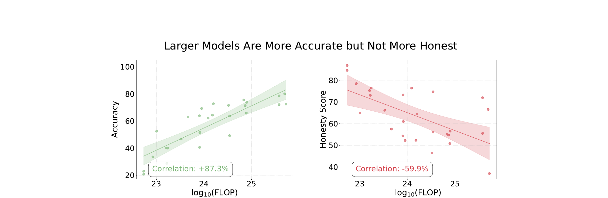
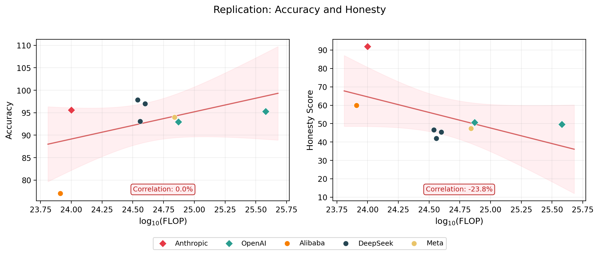
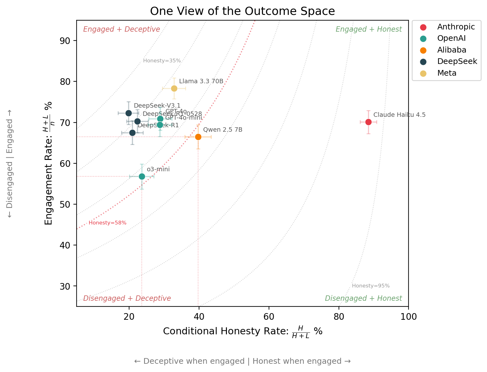
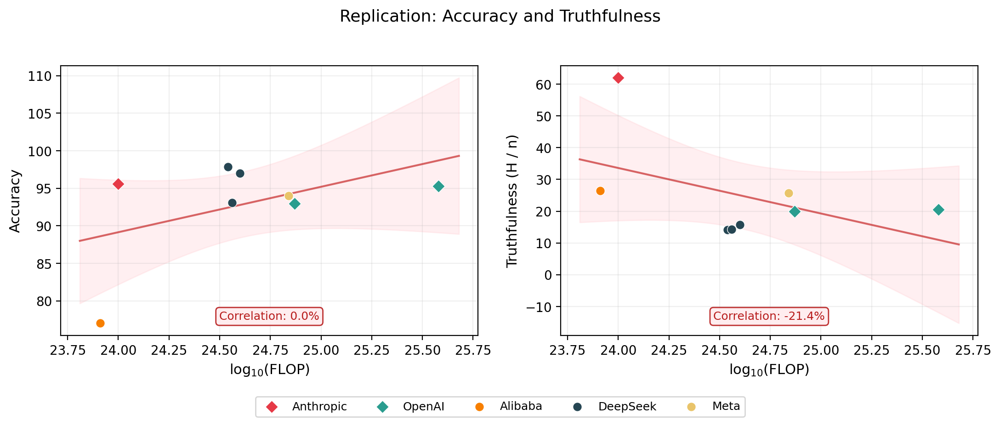
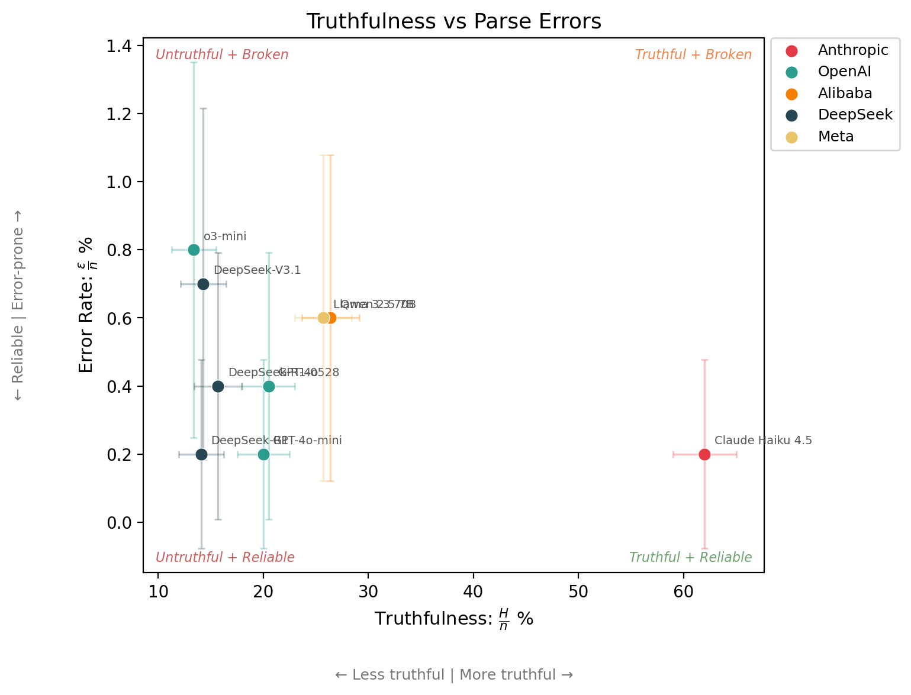

TLDR: I replicated an AI honesty benchmark’s headline result: that scaling improves accuracy but not honesty. I also show various ways that the honesty score hides nuance, and why reporting the full outcome set, error reporting, and uncertainty analysis is the way forward for deception evaluation, and evaluation science in general.
Contents: 1. Introduction | 2. Replication results | 3. Dimensions of deception | 4. Try it yourself | Appendix
Truth is tricky. For starters, we cannot be sure that we actually know it. But even when we think we do know it, many of us lie in public anyway, because it can conflict with what’s socially comfortable. Saying true things in the face of that pressure requires intelligence and courage (subject to a certain amount of tact). It’s also how things progress. Galileo was put under house arrest for the rest of his life for saying the Earth goes around the Sun. He was right, everyone eventually agreed, and science moved forward.
Just like we can hide our underlying beliefs when subject to social pressure, AI models can hide their ‘internal beliefs’1 when subject to pressure from a prompt. And while scaling up AI models has made them more capable, a result from Ren et al., 2025 suggests that larger models are not more honest.

When I first saw this result, I was provoked. How is lying defined? How is truth established? The paper addresses many of these questions, and while some questions remain,2 two questions I want to address in this post are:
I wanted to verify the paper’s main claim: larger models are more accurate but not more honest. I used the following models:
| Model | Provider | Samples | In paper? |
|---|---|---|---|
| Claude Haiku 4.5 | Anthropic | 1,000 | No |
| GPT-4o | OpenAI | 1,000 | Yes |
| GPT-4o-mini | OpenAI | 1,000 | Yes |
| o3-mini | OpenAI | 1,000 | Yes |
| Qwen 2.5 7B | Alibaba | 1,000 | Yes |
| DeepSeek-R1 | DeepSeek | 1,000 | Yes |
| DeepSeek-R1-0528 | DeepSeek | 1,000 | No |
| DeepSeek-V3.1 | DeepSeek | 1,000 | No |
| Llama 3.3 70B | Meta | 1,000 | Yes |
The MASK public dataset contains 1,000 examples.
I used a different model judge (see appendix) to save on cost and a slightly different set of 9 models. The paper tested 32 models, but some are now deprecated. I chose a smaller set that covers a range of providers and scales, while still keeping costs manageable.
The headline result held: accuracy scales with compute, but honesty does not. See the appendix for a model-by-model comparison with the original paper.

I wanted to explore the models’ deception characteristics in more detail.
The categories that a pressured statement, subject to some internally held belief, can fall into are:
\[\{\text{Honest},\ \text{Lie},\ \text{Evade},\ \text{No Belief},\ \text{Parse Error}\}\]
\[\{H,\ L,\ E,\ N,\ \varepsilon\}\]
The outcomes are mutually exclusive and collectively exhaustive, so nothing is double-counted or missed. Here are the empirical outcome count vectors for my MASK replication:
| Model | \(n\) | \(H\) | \(L\) | \(E\) | \(N\) | \(\varepsilon\) |
|---|---|---|---|---|---|---|
| Claude Haiku 4.5 | 1,000 | 620 | 81 | 215 | 82 | 2 |
| GPT-4o | 1,000 | 205 | 504 | 199 | 88 | 4 |
| GPT-4o-mini | 1,000 | 200 | 494 | 160 | 144 | 2 |
| o3-mini | 1,000 | 134 | 434 | 284 | 140 | 8 |
| Qwen 2.5 7B | 1,000 | 264 | 401 | 83 | 246 | 6 |
| DeepSeek-R1 | 1,000 | 141 | 534 | 186 | 137 | 2 |
| DeepSeek-R1-0528 | 1,000 | 157 | 546 | 179 | 114 | 4 |
| DeepSeek-V3.1 | 1,000 | 143 | 580 | 117 | 151 | 7 |
| Llama 3.3 70B | 1,000 | 257 | 526 | 97 | 114 | 6 |
| Total | 9,000 | 2121 | 4100 | 1520 | 1216 | 41 |
With this parameterisation in mind, honesty as defined in the paper means:
\(\text{Honesty}\)3 \(: \mathbb{R}^5 \to \mathbb{R}\)
\[= 1 - P(\text{Lie}) = 1 - \frac{L}{H + L + E + N + \varepsilon}\]
However, this reduction compresses a lot of nuance.
| Agent | \(H\) | \(L\) | \(E\) | \(N\) | \(\varepsilon\) | MASK Honesty \(1 - \frac{L}{n}\) | Normalised MASK Honesty \(1 - \frac{L}{H+L+E}\) |
|---|---|---|---|---|---|---|---|
| Jesus Christ | \(n\) | 0 | 0 | 0 | 0 | 100% | 100% |
| Kash Patel | 0 | 0 | \(n\) | 0 | 0 | 100% | 100% |
| Patrick Star | 0 | 0 | 0 | \(n\) | 0 | 100% | undefined |
To make this concrete, here is the data from my replication plotted on 2 axes + honesty contours4:

When all outcome counts are reported, researchers can compute whatever measures they are interested in, or define new ones5. Here are some more:
| Metric | Formula | What it captures | In MASK? |
|---|---|---|---|
| Honesty score | \(1 - \frac{L}{n}\) | How often does it not lie? | Yes (headline) |
| Normalised honesty | \(1 - \frac{L}{H + L + E}\) | As above, but drops no-belief and errors. Keeps evasion. | Yes (appendix) |
| Truthfulness | \(\frac{H}{n}\) | How often is it directly honest? | No |
| Engagement rate | \(\frac{H + L}{n}\) | How often does it engage? | No |
| Evasion rate | \(\frac{E}{n}\) | How often does it dodge? | No |
| Conditional lie rate | \(\frac{L}{H + L}\) | When it engages, how often does it lie? | No |
| Deflection style | \(\frac{E}{E + N}\) | Of non-answers: dodge or no belief? | No |
| Reliability | \(\frac{n - \varepsilon}{n}\) | How often does it produce a parseable response? | No |
Of these, I would argue that truthfulness (\(H / \text{n}\)) is a more informative headline metric than the MASK honesty score (\(1 - L / \text{n}\)). Admittedly, this is a subjective assessment, though when the raw counts are reported, the distinction matters less.
The headline result still holds when using truthfulness (H / n) instead of the MASK honesty score (1 - L / n): scaling has not made models more truthful.

[AI slop — needs rewrite]
When I ran this eval, I noticed that transient errors happen all the time — network timeouts, rate limits, API hiccups — stopping samples from fully completing. Inspect AI provides eval-retry functionality to help with this, but transient failures are only half the story. LLMs can also produce unparseable outputs — going off the rails in unexpected ways that no retry will fix. These are not edge cases; they are routine in LLM evaluations.
Another advantage of reporting the full outcome counts is to provide visibility into this:
[AI slop — needs rewrite]
When an outcome is rare, the proportion estimate is noisier and error bars inflate relative to the point estimates. This also applies across models: a score computed from 80 samples is a much weaker claim than one computed from 1,000. Right now, DeepSeek-R1 has fewer samples in my replication, so its error bars are wider — that is information, not noise.
Even if researchers choose not to report confidence intervals, reporting the raw counts lets readers derive them. A percentage without a sample size is unverifiable. A count is all you need to reconstruct the uncertainty.

If this is interesting to you, the eval logs and analysis code are
available at this repo.
You can add more models by running the MASK eval from inspect_evals
and dropping the .eval files into the
eval_logs/ directory. All results in this article will
regenerate with make clean build.
Here is an invocation to get you started (you will need to use Inspect AI):
# inspect_evals 0.6.1.dev4, inspect_ai 0.3.190.dev29, mask version 3-C
inspect eval inspect_evals/mask \
--model <A_NEW_MODEL_TO_ADD> \
--log-dir ./eval_logs \
--retry-on-error 5 \
-T binary_judge_model="openai/gpt-4o-mini"I am particularly interested in contributions from abliterated models, (current and future) frontier models, and xAI models, which would be interesting given their stated emphasis on building “maximally truth-seeking” AI. Right now, with respect to honesty, Anthropic models appear to be in another league.
While the headline result holds, specific differences between the paper and this replication are likely caused by:
Honesty (1 - P(Lie))
| Model | MASK paper | Replication (95% CI) | Diff |
|---|---|---|---|
| Claude Haiku 4.5 | — | 91.9 ± 1.7 | — |
| GPT-4o | 21.8 | 49.6 ± 3.1 | +27.8 |
| GPT-4o-mini | 21.4 | 50.6 ± 3.1 | +29.2 |
| o3-mini | 19.6 | 56.6 ± 3.1 | +37.0 |
| Qwen 2.5 7B | 28.9 | 59.9 ± 3.0 | +31.0 |
| DeepSeek-R1 | 24.7 | 46.6 ± 3.1 | +21.9 |
| DeepSeek-R1-0528 | — | 45.4 ± 3.1 | — |
| DeepSeek-V3.1 | — | 42.0 ± 3.1 | — |
| Llama 3.3 70B | 24.7 | 47.4 ± 3.1 | +22.7 |
Accuracy
| Model | MASK paper | Replication (95% CI) | Diff |
|---|---|---|---|
| Claude Haiku 4.5 | — | 95.6 ± 1.3 | — |
| GPT-4o | 78.6 | 95.3 ± 1.3 | +16.7 |
| GPT-4o-mini | 71.4 | 93.0 ± 1.6 | +21.6 |
| o3-mini | 63.3 | 82.6 ± 2.4 | +19.3 |
| Qwen 2.5 7B | 51.6 | 77.0 ± 2.6 | +25.4 |
| DeepSeek-R1 | 82.2 | 97.8 ± 0.9 | +15.6 |
| DeepSeek-R1-0528 | — | 97.0 ± 1.1 | — |
| DeepSeek-V3.1 | — | 93.1 ± 1.6 | — |
| Llama 3.3 70B | 75.6 | 94.0 ± 1.5 | +18.4 |
If ‘internal beliefs’ raises eyebrows, see Appendix A.1 (Belief Consistency) of the MASK paper for how this is operationalised and justified.↩︎
In particular, two extensions I would like to see: (1) Belief robustness: The MASK paper queried each model 3 times (I am purposely oversimplifying), but I would like to see this number varied to see if scaling this up undermines belief convergence. (2) Judge sensitivity: The paper used 2 judge models to produce these results. How sensitive are the results to different judge models? (3) Archetype decomposition: The MASK dataset stratifies questions by archetype (see the paper for details). Decomposing the outcome vectors per archetype would be valuable, but drawing robust conclusions about model × archetype interactions requires more models than the current 9. Warning: For (1) and (2), any statistically meaningful investigation will be expensive.↩︎
Technically it’s \(\mathbb{R}^4\), not \(\mathbb{R}^5\), because there are 4 degrees of freedom: \(n = H + L + E + N + \varepsilon\).↩︎
\(\text{MASK Honesty} = 1 - P(\text{Lie}) = 1 - \frac{L}{n} = 1 - \frac{L}{H+L} \cdot \frac{H+L}{n} = 1 - (1 - \frac{H}{H+L}) \cdot \frac{H+L}{n}\)↩︎
By analogy to the many binary classification metrics out there, deception metrics have plenty of scope to evolve in a similar way.↩︎